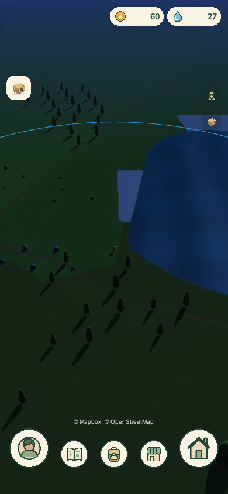

Four ways the world map could read as night while everything you can tap stays easy to find. Each one is shown on the game's real map at its three zoom levels, because zooming changes the camera angle and the night has to work at all of them.
Concepts only. The map keeps today's look so that the only thing changing is the night. The interface is today's, at today's positions. Hometown is not covered: it is daylight-only by an earlier decision.
The reaction on 20 September: Moonlit was fine, but something between Moonlit and Blue hour, where the map keeps more of its colour, would be better. Markers are world-space canvases, which lighting does not touch, so they stay bright on their own. The second round follows that.
The game already has a night, built for the lighting prototype. It dims the light, so the ground drops to near-black and takes the trees, rocks and roads with it. The reference night, a screenshot from an earlier game that is not shown here, does the opposite: it changes the colours and leaves the light in.

The game tonightA real capture from today (Central Park test location). Only the water and the cream interface read. The interface stays at full brightness, so the eye adapts to it and the map looks darker still.
Lightness of the ground around the player, on a scale where 0 is black and 100 is white. The gap between roads and land is what lets you tell a road from a field at a glance.
| roads | land | gap | far away | |
|---|---|---|---|---|
| The reference, night | 16 | 36, up to 60 | 20 to 45 | 20 |
| Geo Pets World tonight | 12 | 12 | 0 | 19 |
| Geo Pets World by day | 44 | 55 | 11 | 57 |
Two things follow. The reference reads as night because the distance is dim, not because the player's surroundings are. And even by day this map separates roads from land by hue more than by lightness, so simply dimming it cannot work: a night palette has to create the contrast. All four treatments below do.
Each uses a different mechanism to keep tappable things visible, so they can be mixed. Drag the slider at the top to watch day turn into night. One Wildling group beyond the range line is illustrative; everything else is where it is in the game's screenshots.
Night is a colour, not a loss of light. The ground keeps its brightness range and turns blue-green, roads go dark so the network reads at a glance, and the distance sinks into navy.
Anything you can tap is simply left out of the night. Stalls, bushes, trees, pickups and Wildlings keep near-daytime colours; markers are interface, so they never dim. At night each marker gains a pale rim.
Default zoomThe far Wildling group sits in the navy distance at full brightness: you can see where to walk next.
Fully zoomed inThe low camera shows sky, so night gets a moon and stars for free.
Fully zoomed outLooking straight down there is no distance to fade, so the ground falls off gently toward the edges instead. Pickups glow.
The pool of light is your reach. Inside the range circle the ground is moonlit; beyond it the same ground drops to about a third of the light. The range line, a one-pixel blue line by day, becomes the lit rim of the pool.
Wildling groups beyond reach shrink to embers: still findable, plainly not in play yet.
Default zoomThe rim crosses the upper map where today's blue line is. The group beyond it is an ember.
Fully zoomed inEverything in view is within reach, so this reads like Moonlit with a lit horizon line.
Fully zoomed outThe treatment's best view: your reach as a lit disc in a dark world. In the painted plate the circle is drawn smaller than the real range; the regraded plate has the true size.
The deepest night, with one strict rule: if it glows, you can tap it. Stalls spill warm light, resource patches carry fireflies, pickups and Wildling groups shine, and the player stands in a small pool of light.
Roads flip to pale moonlit paths, so the network still reads on dark ground.
Default zoomTappable things are easier to find than by day. Halo colour follows rarity.
Fully zoomed inA stall under its own lanterns, a crescent moon, fireflies at the edge.
Fully zoomed outFrom above, the map becomes a field of small lights, each one something to walk to.
The game never goes fully dark: night is the quarter of an hour after sunset. The land keeps its green, the distance turns lavender and the horizon glows. Tappable things need almost no help.
Default zoomThe brightest of the four; the far group is as clear as the near one.
Fully zoomed inThe sky does the work: violet to peach, lit clouds, first stars.
Fully zoomed outWithout a sky in view, dusk is carried by ground colour and long soft shadows alone.
The same measure on the regraded plates, which are the game's real map, at the default zoom. Roads and land are measured directly. The last column is the contrast between a marker's cream ring and the ground beside it; 3 to 1 is the usual floor for a graphic that must be seen.
| roads | land | gap | far away | marker to ground |
|---|